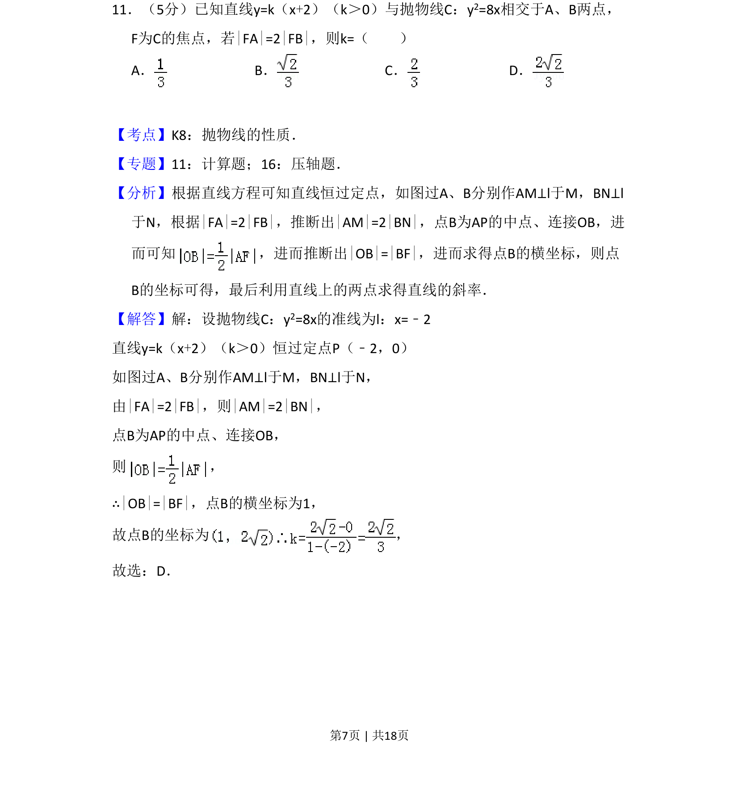
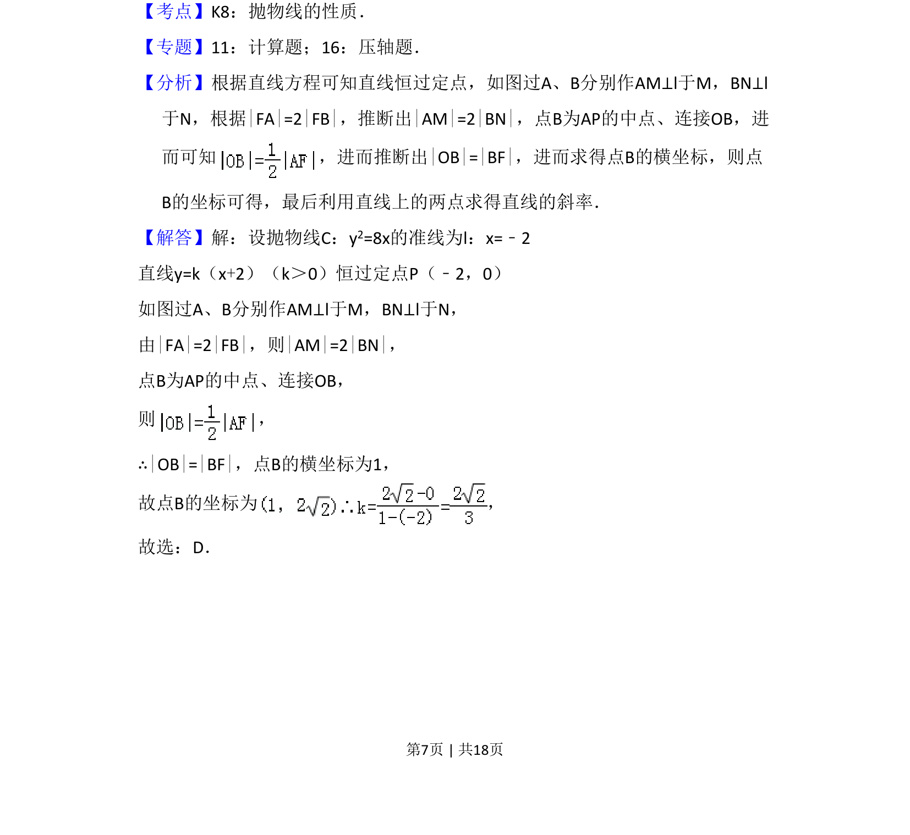
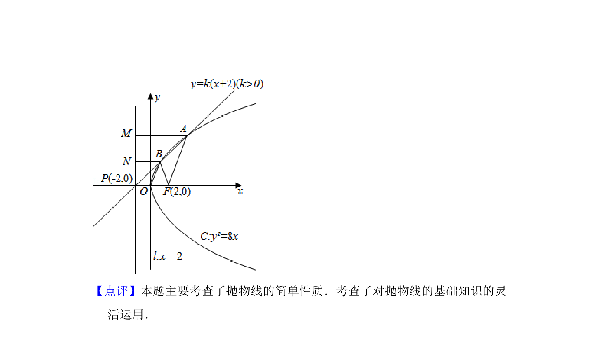

考点：抛物线性质 直线与抛物线的位置关系 几何关系转化

直线与抛物线相交，利用抛物线定义和几何关系求直线斜率。


📄 原 PDF 第 7 页：
素材/真题/吉林/2008-2024·（吉林）数学高考真题/2009年高考数学试卷（文）（全国卷Ⅱ）（解析卷）.pdf
11．（5分）已知直线y=k（x+2）（k＞0）与抛物线C：y2=8x相交于A、B两点， F为C的焦点，若|FA|=2|FB|，则k=（ ） A．B．C．D．
【考点】K8：抛物线的性质．菁优网版权所有 【专题】11：计算题；16：压轴题． 【分析】根据直线方程可知直线恒过定点，如图过A、B分别作AM⊥l于M，BN⊥l 于N，根据|FA|=2|FB|，推断出|AM|=2|BN|，点B为AP的中点、连接OB，进 而可知 ，进而推断出|OB|=|BF|，进而求得点B的横坐标，则点 B的坐标可得，最后利用直线上的两点求得直线的斜率． 【解答】解：设抛物线C：y2=8x的准线为l：x=﹣2 直线y=k（x+2）（k＞0）恒过定点P（﹣2，0） 如图过A、B分别作AM⊥l于M，BN⊥l于N， 由|FA|=2|FB|，则|AM|=2|BN|， 点B为AP的中点、连接OB， 则 ， ∴|OB|=|BF|，点B的横坐标为1， 故点B的坐标为 ， 故选：D．